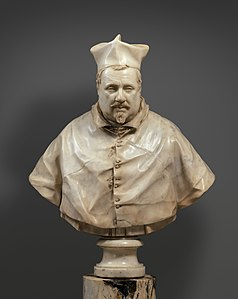
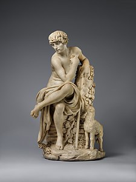
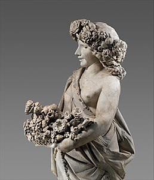
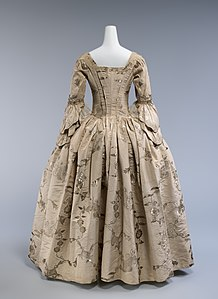
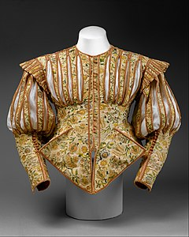
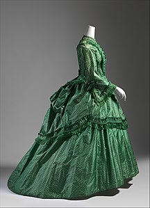

Адреса музею: П'ята авеню, 1000-й будинок Нью-Йорк, США
Час роботи:
Один з найвідоміших та найбільших мистецьких музеїв у світі, який розташований на Мангеттені.
Офіційний сайт
1864 — постанова до справи про створення художнього музею в місті Нью-Йорк.
1870 - обрано правління майбутнього музею та розпочато будівництво першого приміщення для музею.
1880 - відкрито перше приміщення музею.
1902 — нове приміщення в помпезному стилі неокласицизму на східному боці, яке стало візитівкою музею.
1924 — павільйон для експонування декоративно-ужиткового мистецтва США, що став найбільшим і найповнішим в країні.
1950-1960 — облаштування наукової бібліотеки музею, що став найбільшою збіркою видань із мистецтва в США.
1980—1984 — нові галереї для експонування живопису доби європейського Відродження, живопису XIX ст, колекції італійських бронз, меблів майстрів Франції різних епох, німецької порцеляни з колекції пана Лінського.
Італійські скульптури
Колекція італійської скульптури в Музеї мистецтва Метрополітен є однією з найповніших і найважливіших у світі.
Вона охоплює період від середньовіччя до XX століття і включає роботи як відомих, так і невідомих художників.
|  |  |  |
| «Кардинал Шипіоне Боргезе», 1632 | «Іван Хреститель юнаком», до 1630 | «Флора», садова скульптура, 1616 |
| Джуліано Фінеллі | Доменіко П'єратті | П'єтро Берніні |
Інститут костюму Анни Вінтур
Інститут Моди та Технологій Костюмів був заснований у 2015 році в результаті спільної ініціативи Анни Вінтур
і Метрополітен Музею Мистецтва.
Він був створений з метою збереження, дослідження та вивчення історії моди та її впливу на культуру.
|  |  |  |
| Британська сукня, 1747 | Французьке вбрання, 1620 | Британська сукня, 1870 |
Анна Вінтур, відома американська журналістка та головний редактор Vogue з 1998 року,
зіграла значну роль у створенні та розвитку
Інституту костюма (Met Costume Institute) як провідного світового центру досліджень та виставок моди.